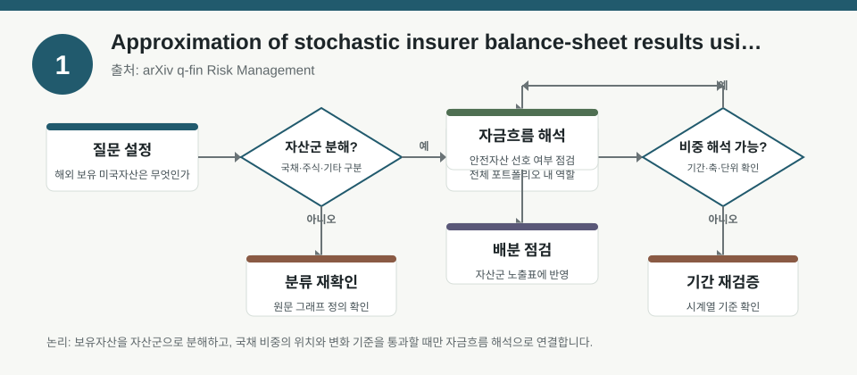
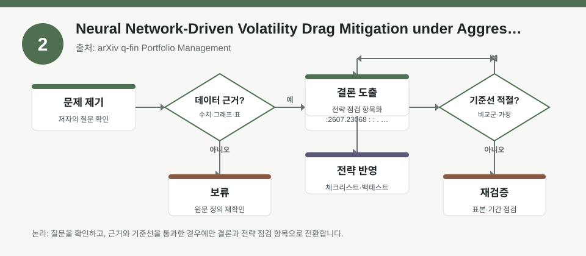
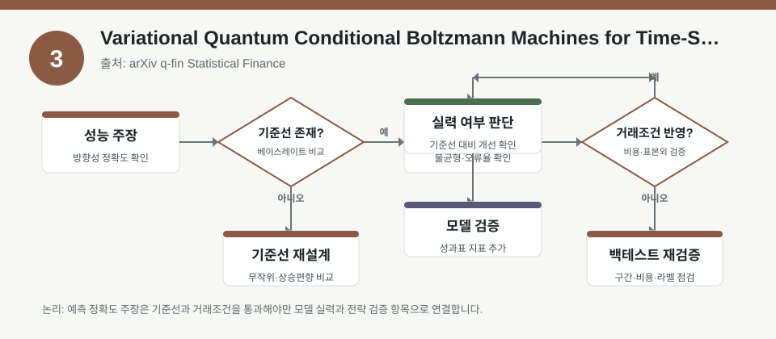

핵심 요약
- 결론: 이번 자료들은 모두 “예측·최적화·근사”의 성능보다, 어떤 가정과 검증 절차로 결과를 해석해야 하는지가 더 중요하다는 점을 보여줍니다.
- 원칙: KOSPI/KOSDAQ 투자자는 팩터 노출, 변동성, 금리·환율 민감도, 백테스트 범위, 규제·신용 리스크를 함께 점검하는 체크리스트로 읽는 것이 안전합니다.
주목할 자료
| 번호 | 자료 | 출처 | 원문 | 핵심 내용 | 데이터 포인트 | 리스크/한계 |
|---|---|---|---|---|---|---|
| 1 | Approximation of stochastic insurer balance-sheet results using signatures of economic scenarios | arXiv q-fin Risk Management | 원문 보기 | 보험 ALM 결과를 경제 시나리오의 signature로 근사해 계산비용을 낮추려는 연구입니다. | 시나리오 기반 ALM, SCR 산정, 자산배분 최적화, 근사 오차 관리 | 보험부채·시나리오 생성 가정, 근사 정밀도, 스트레스 구간 검증이 필요합니다. |
| 2 | Neural Network-Driven Volatility Drag Mitigation under Aggressive Leverage | arXiv q-fin Portfolio Management | 원문 보기 | 레버리지 상황에서 변동성 드래그를 줄이기 위한 신경망 기반 최소분산 포트폴리오 구조를 제안합니다. | 최소분산, 레버리지, 변동성 드래그, 이동평균·비선형 변환, 복잡도 분리 | 과최적화, 거래비용, 레짐 변화, 레버리지 제약의 재현성이 핵심 검증 포인트입니다. |
| 3 | Variational Quantum Conditional Boltzmann Machines for Time-Series Forecasting: Architectures, Symmetric Hyperparameter Evaluation, and a Nonlinear Benchmark | arXiv q-fin Statistical Finance | 원문 보기 | 시계열 예측용 고전·하이브리드·양자형 에너지 기반 모델을 동일 기준으로 비교한 논문입니다. | 조건부 확률모형, 하이퍼파라미터 대칭 평가, 비선형 벤치마크, 예측 비교 | 데이터 분할, 기준모형 설정, 계산비용, 실거래 적용 가능성은 별도 확인이 필요합니다. |
자료별 상세
1. Approximation of stochastic insurer balance-sheet results using signatures of economic scenarios

- 핵심: 보험사 ALM의 대규모 시나리오 계산을 signature 기반 근사로 압축해, 계산 효율과 결과 해석 가능성의 균형을 노린 자료입니다.
- 데이터 포인트: 경제 시나리오의 경로 정보가 중요하며, SCR·자산배분 결과가 어떤 시나리오 집합에 의존하는지 확인할 필요가 있습니다.
- 리스크: 부채 현금흐름, 금리 곡선, 스프레드, 주식·환율 충격의 생성 가정이 실제와 다르면 근사 결과도 흔들릴 수 있습니다.
- 투자전략 반영 예시: KOSPI/KOSDAQ 투자자는 보험·금융주를 볼 때 금리 하락, 신용스프레드 확대, 환율 변동이 포트폴리오 민감도에 어떻게 반영되는지 체크리스트로 점검할 수 있습니다.
- 실행 예시: 백테스트에서 “금리 100bp 변화”, “원달러 급등 구간”, “스프레드 확대 구간”을 분리해 성과와 손실 분포를 따로 확인합니다.
2. Neural Network-Driven Volatility Drag Mitigation under Aggressive Leverage

- 핵심: 레버리지가 큰 환경에서 복리 손실과 변동성 드래그를 줄이기 위해, 단순 이동평균과 신경망을 결합한 최소분산 포트폴리오를 다룹니다.
- 데이터 포인트: 포트폴리오 구조, 룩백 윈도우, 레버리지 비율, 변동성 추정 방식이 결과를 좌우하는 핵심 변수로 보입니다.
- 리스크: 모델이 좋게 보여도 거래비용, 슬리피지, 리밸런싱 빈도, 급변장 국면에서의 성능 저하는 반드시 별도 검증이 필요합니다.
- 투자전략 반영 예시: 한국 투자자는 KOSDAQ 고변동 섹터나 환율 민감주를 볼 때, 레버리지 사용 여부와 변동성 목표치를 분리해 관리하는 점검표를 둘 수 있습니다.
- 실행 예시: 같은 종목군으로 “저변동성 구간”과 “급락 구간” 백테스트를 나누고, 최대낙폭·회전율·수수료 반영 후 성과 차이를 비교합니다.
3. Variational Quantum Conditional Boltzmann Machines for Time-Series Forecasting: Architectures, Symmetric Hyperparameter Evaluation, and a Nonlinear Benchmark

- 핵심: 여러 조건부 에너지 기반 모델을 같은 기준으로 비교해, 예측력이 구조 차이인지 하이퍼파라미터 차이인지 분리하려는 실험 설계가 핵심입니다.
- 데이터 포인트: 고전형, 하이브리드, 양자형 모델 간 비교에서 공정한 하이퍼파라미터 평가와 비선형 벤치마크가 중요합니다.
- 리스크: 양자·하이브리드 모델은 계산비용, 학습 안정성, 데이터 누수 방지, 재현성 문제가 실전 적용의 병목이 될 수 있습니다.
- 투자전략 반영 예시: 한국 주식 투자자는 업종 로테이션이나 변동성 예측을 볼 때, “모델 복잡도”보다 “검증 구간 독립성”과 “실제 거래 반영 여부”를 체크리스트로 두는 것이 유용합니다.
- 실행 예시: 동일 기간에서 단순 AR/선형모형과 복잡모형을 함께 돌려, 예측오차뿐 아니라 방향성 정확도와 구간별 안정성을 비교합니다.
팩터·리스크·포트폴리오 관점
- 핵심: 세 자료 모두 공통적으로 팩터 노출과 리스크 가정이 결과를 지배하므로, 한국 투자자는 금리·환율·변동성·신용스프레드·레버리지 제약을 함께 묶어 봐야 합니다.
- 검수: 백테스트 성과는 표본 구간, 거래비용, 리밸런싱 빈도, 스트레스 구간 포함 여부에 따라 크게 달라질 수 있어 원문 설정을 반드시 확인해야 합니다.
정리
- 결론: 최신 퀀트·리스크 연구는 “무엇이 맞는가”보다 “어떤 가정에서 얼마나 견고한가”를 읽는 데 더 큰 가치가 있습니다.
- 다음 확인: 원문에서 학습·검증 분리 방식, 거래비용 반영, 시나리오 생성 규칙, 스트레스 테스트 구간을 우선 확인해야 합니다.